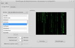

Xfce-Einstellungen
Dieser Artikel wurde für die folgenden Ubuntu-Versionen getestet:
Ubuntu 14.04 Trusty Tahr
Zum Verständnis dieses Artikels sind folgende Seiten hilfreich:
Unter Xfce gibt es mehrere Möglichkeiten, um Einstellungen am System vorzunehmen. Im Einstellungsmanager sind fast alle Optionen gebündelt.
Anwendungsmenü¶
Zu finden ist der Einstellungsmanager im  Anwendungsmenü je nach Ubuntuversion unter:
Anwendungsmenü je nach Ubuntuversion unter:
im Whisker Menu (ab Xubuntu 14.04)
"Einstellungen",
"Einstellungen -> Einstellungen",
"Einstellungen -> Alle Einstellungen..." oder
"Einstellungen -> Einstellungsverwaltung für Xfce4".
Einige der unten aufgeführten Punkte findet man zusätzlich unter "Einstellungen" separat aufgeführt. Sollte eine Option im Einstellungsmanager nicht verfügbar sein, z.B. das Hinzufügen eines Druckers, so findet man diese im Anwendungsmenü unter "System" (siehe auch hier).
Ab Xubuntu 14.04 kommt das Whisker Menu zum Einsatz. Dieses versteckt den Einstellungsmanager hinter dem Punkt Alle Einstellungen.
Installation¶
In der Standardinstallation von Xubuntu ist der Einstellungsmanager schon enthalten. Wenn man Xfce manuell selbst installiert, muss man dies unter Umständen noch nachholen. Dafür muss das folgende Paket installiert werden [1]:
xfce4-settings (universe)
 mit apturl
mit apturl
Paketliste zum Kopieren:
sudo apt-get install xfce4-settings
sudo aptitude install xfce4-settings
Einstellungsmanager¶
| Einstellungsmanager |
Der Einstellungsmanager (Settings Manager) bietet innerhalb von Xfce Zugriff auf die wichtigsten Komponenten. Das Aussehen wie z.B. Symbole, Thema oder der Splashscreen sowie das Verhalten der einzelnen Komponenten kann hier komfortabel konfiguriert werden. Das Aussehen sowie die Optionen des Managers variieren je nach verwendeter Ubuntu-Version geringfügig. Über die Schaltfläche "Alle Einstellungen" oder "Übersicht" gelangt man bei den meisten Einstellungsmenüs wieder zum Einstellungsmanager.
Hinweis:
Sollte der Einrichtungsmanager breiter als der Bildschirm sein, liegt dies an einer zu geringen Auflösung. Über die Titelleiste kann das Fenster bei gedrückter linker Maustaste  verschoben werden.
verschoben werden.
| Anzeige |
Anzeige¶
Hier findet man wichtige Einstellungsmöglichkeiten für den Bildschirm. Neben der "Gammakorrektur" können hier Änderungen an der "Auflösung" z.B. 1280x1024@54 vorgenommen werden. Diese Einstellungsmöglichkeit ist erst ab Xfce 4.8 bzw. Xubuntu 11.04 integriert.
Alternativ kann auch das separate Programm arandr (insbesondere zur Konfiguration zweier Bildschirme) verwendet werden.
Achtung!
Prinzipiell können falsche Angaben den Monitor beschädigen. Die meisten schalten sich bei ungeeigneten Auflösungen zwar automatisch ab, aber idealerweise sollte man vor einer Änderung das Monitor-Handbuch konsultieren.
| Arbeitsflächen |
Arbeitsflächen¶
Die Anzahl sowie die Namen der Arbeitsflächen können in diesem Menü geändert werden. Unter dem Reiter "Seitenränder" kann man Ränder definieren, über die hinaus keine Fenster gesetzt werden.
Barrierefreiheit¶
Hier können Einstellungen zur Barrierefreiheit vorgenommen werden.
Benachrichtigungen¶
Anpassung des Erscheinungsbildes der Benachrichtigungen vornehmen. Neben dem Stil, der Deckkraft (Transparenz) und der Position kann die Anzeigedauer verändert werden.
| Bevorzugte Anwendungen |
Bevorzugte Anwendungen¶
Um die als Systemstandard aktivierten Programme wie
Webbrowser (Standard: Firefox)
E-Mailprogramm (Standard: Thunderbird)
Terminalanwendung (Standard: Terminal)
Dateimanager (erst ab Xfce 4.8; Standard: Thunar)
zu ändern, benutzt man diese Einstellung. Entweder wählt man aus den installierten Anwendungen aus oder nimmt eine Anwendung aus /usr/bin/.
Bildschirmschoner¶
Der Bildschirmschoner ("Screensaver") schaltet sich ein, wenn Maus oder Tastatur einige Zeit nicht genutzt werden. Die Zeitintervalle zur Aktivierung können in diesem Menü verändert werden. Außerdem stehen dem Benutzer unter anderem folgende Möglichkeiten offen:
|  |
| XScreenSaver |
Deaktivierung des Bildschirmschoners
leerer Bildschirm
einzelner Bildschirmschoner
zufälliger Bildschirmschoner
Sperrung des Bildschirms
Ausschalten des Monitors
Anzeige der eigenen Bildersammlung et cetera
Während bis einschließlich Xubuntu 13.10 das Programm XScreensaver genutzt wurde, kommt ab Xubuntu 14.04 der neu entwickelte Light-Locker zum Einsatz. Die Konsequenzen werden in der Anleitung Screen locking in Xubuntu 14.04  ausführlich behandelt.
ausführlich behandelt.
Dateimanager¶
Hier können Basiseinstellungen des Dateimanagers Thunar vorgenommen werden. Neben Ansichtsmodi und Konfiguration der Seitenleiste kann hier unter Verhalten eingestellt werden, ob ein Objekt per Doppelklick oder einfachem Klick geöffnet werden soll. Die Einstellungsoptionen können auch direkt im Dateimanager aufgerufen werden.
| Energieverwaltung |
Energieverwaltung¶
Einstellungen zum Verhalten des Computers in verschiedenen Betriebsmodi optimieren. Diese Einstellungsmöglichkeit ist erst ab Xubuntu 11.04 eingesetzt. Siehe xfce4-power-manager.
Erscheinungsbild¶
Hier können die installierten Themen geändert und den eigenen Vorstellungen entsprechend eingestellt werden. Die Änderungen beziehen sich nur auf den Fensterinhalt, die Fensterrahmen selbst werden über die Fensterverwaltung geändert. Um eigene Symbole oder Themen zu installieren, geht man nach dieser Anleitung vor.
Fensterverwaltung¶
Neben der Änderung des Rahmenstils besteht in diesem Menü die Möglichkeit, das Hinzufügen von Tastenkombinationen, Einstellungen des Fokus (Klick/Zeiger) und das Verhalten von Fenstern sowie der Inhalte zu verändern.
Kalender¶
Das Einstellungsmenü des Terminplaners Orage. Hier können Basiseinstellungen des Kalenders wie z.B. Anzeige in der Systemleiste, Kalender beim Systemstart anzeigen, Klänge usw. geändert bzw. angepasst werden. Weitere Informationen sind im Artikel Orage enthalten.
Leiste¶
Wie man die Menüleiste(n) sowie deren Erweiterungen konfiguriert bzw. einrichtet, ist im Artikel Xfce Panel beschrieben.
Ab Xubuntu 15.10 neu hinzugekommen ist die Anwendung Xfce Panel Switch , mit der bequem zwischen verschiedenen Panel-Layouts umgeschaltet werden kann. Fünf verschiedene Profile werden mitgeliefert. Zu finden ist das Programm unter "Einstellungen -> Xfce-Leistenschalter".
Maus und Touchpad¶
Unter diesem Menü können unter anderem Einstellungen zu rechtshändiger/linkshändiger Mausnutzung, Bewegungseinstellungen, Drag & Drop sowie die Änderung des Mauszeigers vorgenommen werden. Um andere Mauszeiger nutzen zu können, geht man nach dieser Anleitung vor.
| Schreibtisch |
| MIME-Typ-Editor |
MIME-Typ-Editor¶
Über den "MIME-Typ-Editor" kann ab Xfce 4.10 bzw. Xubuntu 12.10 das mit dem Medientypen verknüpfte Standardprogramm verändert werden. Weitere Hintergrundinformationen sind im Artikel MIME-Typ zu finden.
Schreibtisch¶
Die alte Bezeichnung lautete "Arbeitsplatz". Neben der Änderung des Hintergrundbildes und der Farbeinstellungen können hier Änderungen am Desktopverhalten durch (de)aktivieren der entsprechenden Optionen vorgenommen werden. Nützlich ist die Option, das Arbeitsplatzmenü auf dem Desktop durch das Kontextmenü ( ) zu erreichen. Für weitere Einstellungen siehe auch Xfce Desktop.
) zu erreichen. Für weitere Einstellungen siehe auch Xfce Desktop.
Alternativ kann hier der Einstellungseditor verwendet werden.
| Sitzungs- und Startverhalten |
Sitzungs- und Startverhalten¶
Hier können unter anderem Einstellungen zur Sitzungswahl, zur Anzeige einer Begrüßungsanimation (Splash=Startbild) oder zum Kompatibilitätsmodus (GNOME/KDE) vorgenommen werden. Der Unterpunkt "Automatisch gestartete Anwendungen" bietet ab Xfce 4.6 die Möglichkeit, Programme nach der Anmeldung automatisch zu starten.
Tastatur¶
Hier können für die Tastatur relevante Einstellungen wie Tastaturschema, Tastenkürzel, Verhalten sowie die genutzte Tastatur geändert werden.
| Tastatur | |
| Reiter | Beschreibung |
"Verhalten" | Tastenanschlag und Cursor anpassen |
"Tastenkürzel" | Hier kann man wichtige Befehle oder Programmaufrufe als Kürzel hinterlegen |
"Tastaturbelegung" | Tastaturlayout ändern |
Tastenkürzel¶
Leider verwenden Xfce und Xubuntu unterschiedliche Tastenkürzel (siehe auch New default shortcut keys ). Wenn man beispielsweise
Strg +
Alt +
T zum Start eines neuen Terminalfensters nutzen möchte, ruft man den Dialog "Tastenkürzel" auf und wählt "Hinzufügen". Als nächstes wird ein Befehl (Programmname) erwartet, konkret also Terminal. Im dritten Schritt drückt man die gewünschte Taste oder Tastenkombination.
Die Kürzel werden in der Datei ~/.config/xfce4/xfconf/xfce-perchannel-xml/xfce4-keyboard-shortcuts.xml gespeichert.
Um bereits voreingestellte Tastenkürzel umdefinieren zu können (z.B. für Thunar), muss man zuerst unter "Erscheinungsbild -> Einstellungen" die Option "Menükürzel veränderbar machen" aktivieren.
Weitere Beispiele (siehe auch Xfce Startbefehle):
| Tastaturschema | |
| Tastenkürzel | Befehl |
| Strg+Esc | xfce4-popup-menu |
| Alt+F1 | xfhelp4 |
| Strg+Alt+Entf | xflock4 |
| Alt+F2 | xfrun4 |
| Strg+Alt+Esc | xfkill |
| leiser (XF86AudioLowerVolume) | aumix -v-10 |
| lauter (XF86AudioRaiseVolume) | aumix -v+10 |
| stumm (XF86AudioMute) | aumix -v0 |
Eine vollständige Liste der aktuellen Belegung erhält man mit dem Befehl:
xfconf-query -c xfce4-keyboard-shortcuts -l -v
Wechseldatenträger- und Medieneinstellungen¶
| Datenträger |
Hier kann das Verhalten für Wechseldatenträger und -medien gesteuert werden. In diesem Fenster die entsprechenden Einstellungen vornehmen. Die Datenträgerverwaltung kann unter diesem Menüpunkt (de)aktiviert werden.
Das reine Xfce verwendet im Gegensatz zu Xubuntu die Möglichkeiten des Dateimanagers Thunar.
Im Reiter "Unterhaltungsmedien" können Befehle für die Wiedergabe von Audio-CDs und Video-DVDs eingegeben werden. Standardmäßig sind Befehle für Parole eingetragen. Ersetzt man Parole jedoch durch eine andere Anwendung, so müssen diese Befehle von Hand angepasst werden:
| Befehle für Wiedergabe von Unterhaltungsmedien | ||
| Anwendung | Audio-CD | Video-DVD |
| Parole | parole --device=%d | parole --device=%d |
| VLC | vlc cdda:// | vlc dvd:// |
| Einstellungseditor |
Einstellungseditor¶
Im Einstellungseditor, welcher im Anwendungsmenü unter "Einstellungen -> Einstellungseditor" zu finden ist, können die Einstellungen in der Xfconf unter anderem für Ristretto, den Schreibtisch, Thunar und viele weitere Programm verändert werden.
Hierzu den gewünschten Kanal, z.B. "xfce4-desktop", im linken Fensterbereich auswählen und dann im rechten Bereich zur gewünschten Eigenschaft navigieren. Über die Schaltflächen können die Werte verändert und mit der Schaltfläche "Speichern" übernommen werden:
| Schaltflächen | |
| Symbol | Bedeutung |
| Neue Eigenschaft hinzufügen. | |
 | Eigenschaft bearbeiten. |
| Ursprungszustand wiederherstellen. | |
Weitere Einstellungen¶
Diese Einstellungen beziehen sich nur auf Xubuntu, nicht auf Xfce.
Benutzer und Gruppen¶
Die Verwaltung von Benutzerkonten wird ausführlich im Artikel Benutzer und Gruppen Xubuntu beschrieben.
| Druckerkonfiguration |
Drucker¶
Um einen Drucker unter Xfce einzurichten, startet man im Anwendungsmenü
"Einstellungen",
"Einstellungen -> Drucken" oder
"System -> Drucken".
Nun wird die GNOME Druckerkonfiguration gestartet, die eine bequeme grafische Einstellung ermöglicht. Der ehemalige "Drucken"-Dialog in den Xfce-Einstellungen legte nur das zu verwendende Drucksystem (und nicht den Drucker!) fest.
| LightDm GTK+ Greeter: settings |
LightDM grafisch konfigurieren¶
Beim Einstellungseditor LightDM-GTK+ Einstellungseditor handelt es sich um eine kleine grafische Oberfläche (GUI), die in Python geschrieben ist. Damit kann man im Begrüßungsdialog, also der grafischen Anmeldung via LightDM, Dinge wie Thema, Schriftart, Hintergrund, Fensterposition uvm. einstellen.
Links¶
Xfce
 Übersichtsartikel
ÜbersichtsartikelPCLinuxOS Magazin:
Xfce Einstellungsmanager: Teil 1
 06/2010
06/2010Xfce Einstellungsmanager: Teil 2
07/2010Xfce Einstellungsmanager: Teil 3
08/2010
Tapetenwechsel
- Bilderliste unter Xfce nutzen, Artikel LinuxUser 12/2008Wallpaper - Hintergrundbilder der verschiedenen Ubuntu-Versionen
- Erstellt mit Inyoka
-
 2004 – 2017 ubuntuusers.de • Einige Rechte vorbehalten
2004 – 2017 ubuntuusers.de • Einige Rechte vorbehalten
Lizenz • Kontakt • Datenschutz • Impressum • Serverstatus -
Serverhousing gespendet von